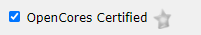
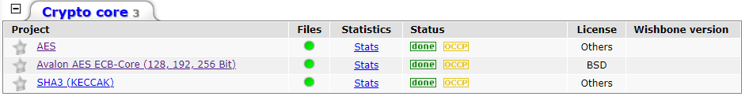

Criptografia em Hardware Fpga¶
- Alunos:
- Antonio Andraues
- Gabriel Francato
- Samuel Granato
- Curso: Engenharia da Computação
- Semestre: 8
- Contato:
- Ano: 2020 Â
Começando¶
Para seguir esse tutorial é necessário:
- Hardware: DE10-Standard e acessórios
- Softwares: Quartus 18.01
- Documentos: DE10-Standard_User_manual.pdf Â
Motivação¶

Tipos de Encriptografia¶
-
Simetrica:¶
Â
-
Assimetrica:¶
Â
Â
Implementação¶
Â
Platform Designer como achar e utilizar um core de criptografia¶
Como achar um componente:¶

   Permitindo importar componentes personalizados produzidos pela comunidade e amplamente utilizado no mercado.
No site: https://opencores.org/
   Também é possÁvel por exemplo, encontrar componentes diversos ja prontos para utilizar e com documentação de uso.
   Componentes estes disponibilizados e mantidos pela comunidade.
Imagem referente a Aba https://opencores.org/projects:

Note
Como podemos perceber existem
77 cores diferentes somente na aba de Criptografia.
Utilizando um core de criptografia¶


Atencao
Perceba que a quantidade de cores disponÁveis diminui bruscamente.
Isso não significa que os outros 75 cores não possam ser uteis para você.
Apenas que os mesmos ainda não foram de certa forma revisados pela OpenCores.
Avalon AES ECB-Core (128,192,256 Bit)¶
   Vamos pegar de exemplo este "Avalon AES ECB-Core (128,192,256 Bit)"
   Baixar a pasta e analisar algumas informações relevantes.

    No caso deste componente a pasta "doc".

   Onde encontramos dois segmentos importantes da documentação:
manual ("avs_aes.pdf")¶
   Sessões importantes do pdf:
- Configuration Generics

   Mostra as opções genéricas que podem ser modificadas no componente.
-Signals

   Imagem de exemplo da intel:

-Memory Map

   Mapa de memória.
-Control Register


   Descrição melhor dos pontos de controle (CTRL da tabela de Mapa de memória)
sw (manual do driver para uso do componte via C++ pelo barramento Avalon)¶
   O driver pode ser localizado na pasta SW:

   Parte do arquivo do driver:
void avs_aes_init(avs_aes_handle* context){
context->key = (unsigned int*) KEY_ADDR;
context->payload= (unsigned int*) DATA_ADDR;
context->result = (unsigned int*) RESULT_ADDR;
context->control = (unsigned int*) AESCTRLWD;
*(context->control) = 0x00000000;
}
void avs_aes_setKey(avs_aes_handle* context, unsigned int* key){
int i=0;
unsigned int* target_ptr = (unsigned int* )context->key;
/* Invalidate old key; */
*(context->control) &= (~KEY_VALID);
asm __volatile("sync" :::);
for(i=0; i<KEYWORDS; i++){
*(target_ptr++) = *(key++);
}
asm __volatile("sync" :::);
/* validate key */
*(context->control) |= KEY_VALID;
}